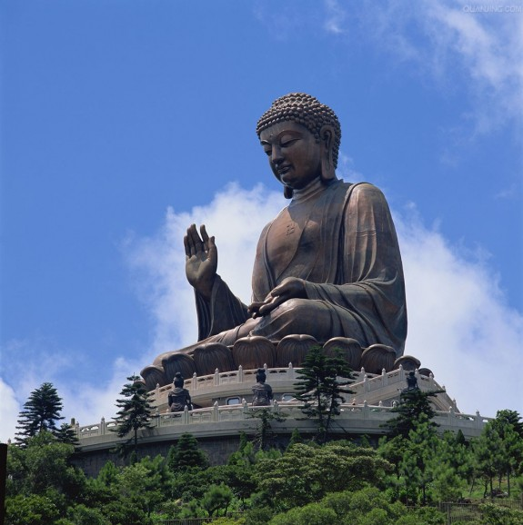
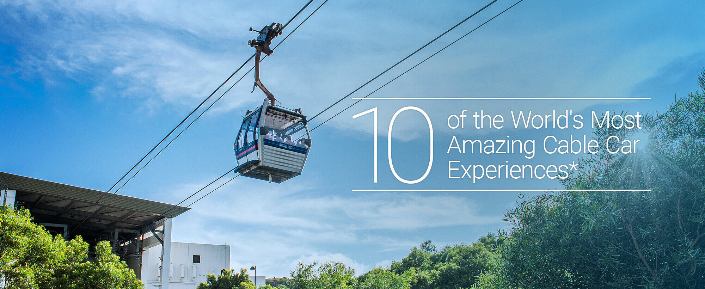
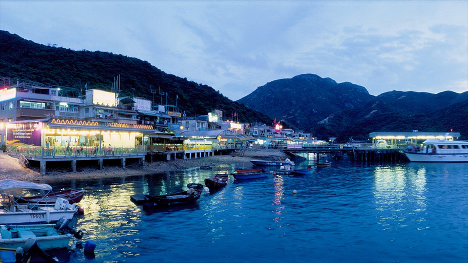
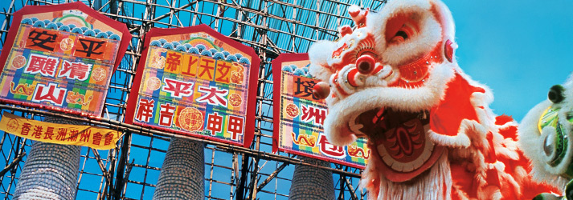
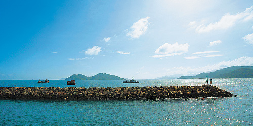
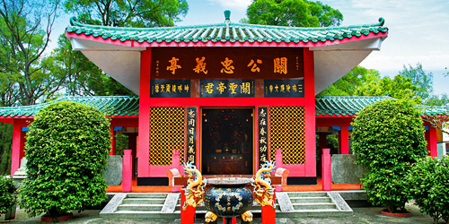

The Peak, Hong Kong's most popular attraction is more than just stunning vistas or great shopping and dining. It's an amazing collection of unique must-visit attractions, with a diverse fun-filled experience of Hong Kong's living culture.
The Peak Tram - A must-experience in Hong Kong, tens of millions of people from every corner of the globe have taken the ride, which affords a uniquely spectacular perspective of the city.
The Peak Tower - Perching on The Peak at 396 metres above sea level, The Peak Tower is one of the most stylish architectural icons in Hong Kong. Inside The Peak Tower, there is a dazzling array of restaurants, shops and entertainment venues set against the beautiful backdrop of the city.
Peak Tram Historical Gallery - Open in September, 2007, The Peak Tram Historical Gallery exhibits more than 200 memorabilia exhibited divided into 15 theme sections. Free access for visitors who takes Peak Tram ride at Garden Road Peak Tram Lower Terminus.
Sky Terrace 428 - the highest viewing terrace in Hong Kong offering a stunning 360-degree panoramic view across the Hong Kong. Pre-purchase of Peak Tram Tickets and Peak Tram Sky Pass or rental of Sky Terrace 428 West Deck for function are available.
Ocean Park Hong Kong
Introduction
Opened in 1977, Ocean Park Hong Kong is a marine-life theme park featuring animal exhibits, thrill rides and shows. In 2012, its impressive ability to offer guests a world-class experience that blends entertainment with education and conservation was confirmed when it became the first Asian winner of the biannual Applause Award, the most prestigious award in the amusement and theme park industry.
The park is located on the southern side of Hong Kong Island, covering more than 915,000 square metres. The Waterfront and The Summit areas are connected by the Cable Car and Ocean Express funicular train.
Shark Mystique - A journey deep underwater to meet over a hundred sharks and rays that shatters the myths surrounding them, including the sawfish with a saw-like rostrum, and the zebra shark with leopard-like spots! Discover their beauty from 360 degrees at this exciting exhibit.
Old Hong Kong - Relive fond memories of times gone by! Old Hong Kong brings the unique culture of Hong Kong in the 1950s, 1960s and 1970s back to life. Savour the sights and sounds of yesteryear aboard the Heritage Tram! Be mesmerised by the colour and buzz of life in accurate recreations of old streets and scenes. Take a trip into nostalgia and take home some antique souvenirs to keep the memories alive!
Thrill Mountain - In this zone, guests can dangle off a cliff on the floorless roller coaster, Hair Raiser, or hang upside down while swinging on The Flash. Soar with The Aviator to feel the sensation of flight, before knocking around on bumper cars. Don’t leave without a ride on Rev Rooster, a high-speed and energetic classic.
Aqua City - In this world-class marine-themed area, you can watch Symbio, a multi-sensory show featuring the world’s first 360-degree water screen, embark on a journey of exploration into the Grand Aquarium, or view marine life from the world’s largest aquarium dome or through a giant viewing panel eight by 13 metres large. Make sure you drop by Neptune’s Restaurant for Hong Kong’s first aquarium dining experience!
Tian Tan Buddha (The Big Buddha)

Introduction
The remote Po Lin Monastery, hidden away by lush mountains, became a popular attraction when the extraordinary Tian Tan Buddha statue (informally known as the Big Buddha) was erected in 1993. Sitting 34 metres high and facing north to look over the Chinese people, this majestic bronze Buddha draws pilgrims from all over Asia.
The eyes, lips, incline of the head and right hand, which is raised to deliver a blessing to all, combine to bring a humbling depth of character and dignity to the massive Buddha, which took 12 years to complete. Climb the 268 steps for a closer look at this remarkable statue, and to enjoy the sweeping mountain and sea views that can be seen from its base.
Opposite the statue, the Po Lin Monastery is one of Hong Kong’s most important Buddhist sanctums and has been dubbed ‘the Buddhist World in the South’. Home to many a devout monk, this monastery is rich with colourful manifestations of Buddhist iconography and its pleasant garden is alive with birdsong and flowery scents. You can also enjoy a meal at its popular vegetarian restaurant.
Ngong Ping 360

Introduction
Ngong Ping 360 = Ngong Ping plateau + 360-degree views. As one of the most unique attractions in Hong Kong, it comprises of a world’s top 10 amazing cable car ride and a culturally themed landscaped garden called Ngong Ping Village.
Ngong Ping 360 Cable Car is a 25-minute scenic ride that connects Ngong Ping plateau with the town of Tung Chung. This hotspot of Hong Kong tourism is where you can feast your eyes with the panoramic vistas of Lantau Island and beyond, while enjoying quality time with your friends and family in a standard, crystal or private cabin. Do add it to your list of must do in Hong Kong.
Ngong Ping Village, on the other hand, sits right next to Lantau’s cultural heritage such as Po Lin Monastery and the Tian Tan Buddha. The convenient location also offers easy access to other island highlights, making Ngong Ping 360 the perfect start for your Lantau day trip - if you are looking for different places to go in Hong Kong. Whether you are a cultural, religious or recreational tourist, you will always find something for you here.
Ngong Ping 360 never fails to inspire ideas of what to do in Hong Kong. In addition to exciting on-site shopping, dining and recreational facilities, Ngong Ping Village also hosts festive and themed events to entertain individual, group or family visitors alike. Treat yourself to a 5D movie at “Motion 360”, a martial art show at “Stage 360” or a multi-media journey at “Walking with Buddha”. Capture the memorable moments of your Lantau adventure with our festive installations placed around the village. Alternatively, take a five-minute walk to visit nearby Buddhist monuments for an enlightening trip. You may also travel further to Tai O fishing village and the many beaches on the other side of Lantau on the connected buses and coaches. If you are interested in taking an in-depth look at the biodiversity and the local heritage of the island, the guided tours offered by 360 Holidays are not-to-be-missed.
Cheung Chau

Introduction
Small it may be, but the island of Cheung Chau packs a powerful punch when it comes to attractions. Aside from its annual explosion of Bun Festival fun, Cheung Chau’s temples, seafood restaurants, beaches — and even a pirate’s hideout — make it an interesting getaway all year round.

The Cheung Chau Bun Festival
It falls on the fifth to the ninth days of the fourth lunar month. Every year, the people of Cheung Chau get busy making papier-mâché effigies of deities, preparing costumes, baking buns and building a bamboo tower. They’re preparing for the thousands of people that will soon descend upon their tiny island for what Time.com deemed one of the world's 'Top 10 Quirky Local Festivals'.
It all started with a plague that devastated Cheung Chau in the late Qing dynasty (1644–1911). The islanders built an altar in front of the Pak Tai Temple and petitioned the god Pak Tai to drive off the evil spirits besieging the island, while parading statues of deities through the narrow lanes of their village. The plague ended after the performance of these Taoist rituals and 100 years later the rituals are still performed in a festival that is listed as an intangible part of China’s cultural heritage.
For the locals, this is the continuation of their customs. The islanders have a strong sense of community and those who have left to work elsewhere will return for this celebration. For the thousands who crowd the ferry boats to the erstwhile pirate haven, this is the spectacular Cheung Chau Bun Festival. The weeklong event includes Taoist ceremonies and music, a parade, lion dances, drum beating and an exciting Bun Scrambling Competition.

Cheung Chau Sai Tai Road
The tiny island of Cheung Chau has no motorised traffic, making it a welcome getaway for strollers. Follow Sai Tai Road, which heads southwest from the pier and takes you past pleasant coastal scenery and a great selection of popular eateries. This will also lead you in the direction of the respective turfs of a goddess and a pirate – the island’s Tin Hau Temple and Cheung Po Tsai Cave.

Kwan Kung Pavillion
This pavilion-style temple on the island of Cheung Chau was built in 1973 and houses an eight-foot statue of Kwan Kung, the Han dynasty (206 BC to 220 AD) general who later became deified. The statue is made from an entire camphor tree. In front of the pavilion is an incense burner with two dragons.
Come here in March when the heady aroma of incense mingles with the sweet smell of cherry blossom.